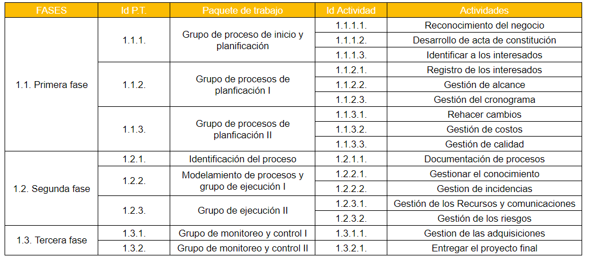
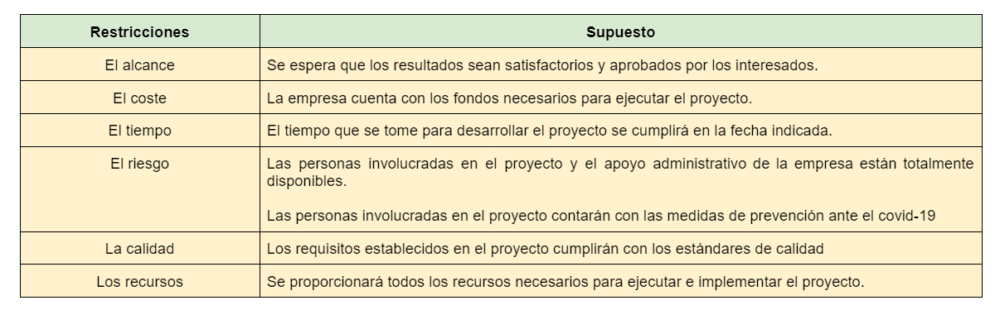
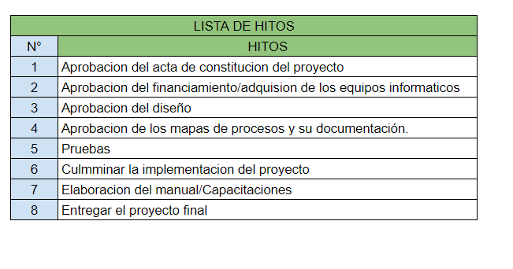

Desarrollar el Cronograma
PLAN PARA LA DIRECCIÓN DEL PROYECTO
- Plan de Gestión de Cronograma
DOCUMENTOS DEL PROYECTO
- Lista de Actividades

- Atributos de Actividades
- Registro de Supuestos

- Lista de Hitos

Acuerdos
Factores Ambientales
Activos de los Procesos de la Organización
METODO DE LA RUTA CRÍTICA
Cronograma del proyecto